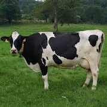

<!--
  Generated template for the TroupeauPage page.

  See http://ionicframework.com/docs/components/#navigation for more info on
  Ionic pages and navigation.
-->
<ion-header>

  <ion-navbar>
    <ion-title *ngIf="troupeau">{{troupeau.etab}}-{{troupeau.EDE}}</ion-title>
  </ion-navbar>
  <div>
  	<ion-item class="search">
  		<ion-label><ion-icon name="search" > </ion-icon></ion-label>
  		<ion-input id='search' placeholder="N°travail, nom ..."> </ion-input>
  	</ion-item>
  	<div class="femelletoggle">
  		<ion-label>Femelle sans vigilence ?</ion-label>
  		<ion-toggle ion-toggle-text="oui;non" ng-model="customText"></ion-toggle>
  	</div>
  </div>

</ion-header>


<ion-content >
	<ion-card *ngFor="let cow of cows">
		<ion-grid>
			<ion-row>
				<ion-col col-12>
					<div class="conteneur">
						<ion-row class="titre">FR6465458|<b>9512-{{cow.name}}-66</b></ion-row>
						<ion-row><p>Age: {{cow.age}}</p></ion-row>
						<ion-row><p>Vêlée il y a: {{cow.date_de_terme}}</p></ion-row>
					</div>
					
					<aside> </aside>
				</ion-col>
			</ion-row>
			<ion-row class="second-line">
				<ion-col class="first" col-11>
					Vigilence: aucune
				</ion-col>
				<ion-col col-1>
					
				</ion-col>
			</ion-row>
			<ion-row>
				<ion-col col-4 class="third-line">
					<ion-icon name="add">
					</ion-icon>
					<aside>Sexée Femelle</aside>
				</ion-col>
				<ion-col col-4 class="third-line">
					
					
					<aside>Croisement</aside>
				</ion-col>
				<ion-col col-4 class="third-line">
					
					<aside>Réforme/Vente</aside>
				</ion-col>
			</ion-row>
		</ion-grid>
	</ion-card>

</ion-content>
